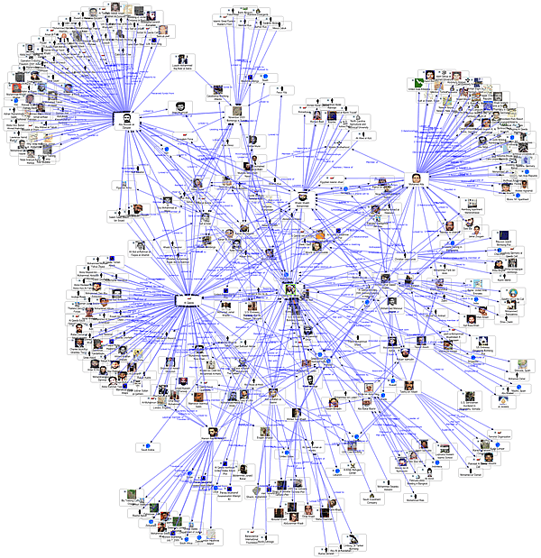
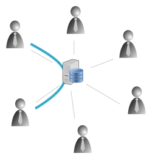
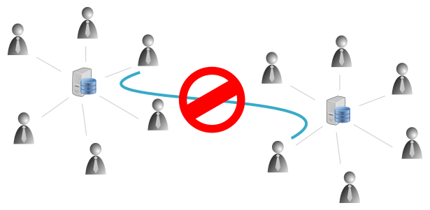
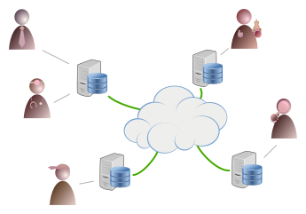

Social Network Decentralizzati e Open Source
Linux Day 2013
Rete Sociale
Una rete sociale (in inglese social network) consiste di un qualsiasi gruppo di persone connesse tra loro da diversi legami sociali, che vanno dalla conoscenza casuale, ai rapporti di lavoro, ai vincoli familiari
Esempi

Struttura di un
SN Centralizzato

Ogni relazione, pur essendo costruita tra utenti, passa attraverso un "server" che detiene i dati di tutti gli utenti iscritti al servizio
Struttura di un
SN Centralizzato

Ogni server è "chiuso" e consente di comunicare solo con utenti dello stesso server, spingendo più utenti a iscriversi sul server per poter restare in contatto.
Perchè questa struttura è pericolosa?
- I dati degli utenti possono essere trattati come merce che può essere venduta alle aziende per fini statistici e come analisi di mercato.
- Controllo dei contenuti e possibile censura
- Tracciamento degli utenti
- Perdita della proprietà intellettuale
"I tuoi dati smettono di essere tuoi"
"Smetti di essere libero"
"Diventi un prodotto"

Ricercatori hanno creato un tool che utilizza i dati liberamente disponibili da Facebook per ricavare informazioni su una persona
Es, è possibile analizzare le ore del giorno in cui la persona è online e ricavarne le ore di sonno e veglia
Come liberarsi?
Dire addio ai vecchi sistemi per utilizzare Social Network Decentralizzati e Open Source
Come funziona?
Un Social Network Decentralizzati e Open Source consente a diversi server che eseguono lo stesso software di parlarsi tra loro
Come funziona?

Utenti iscritti su server differenti, gestiti in proprio o da qualcuno di cui si fidano (es. il LUG) possono comunicare
Cosa ci guadagno?
Un SN Decentralizzato consente di mantenere il controllo dei propri dati, in particolare se si installa il proprio server
"I tuoi dati restano tuoi"
è più complesso raccogliere i dati se sono distribuiti si molti server
"Sei libero"
un software Open Source permette l'analisi del codice per sapere esattamente cosa succede "dietro le quinte"
"Non sei un prodotto"
nessuno vende le tue preferenze e il tuo profilo
bna by Gatto Mimmo